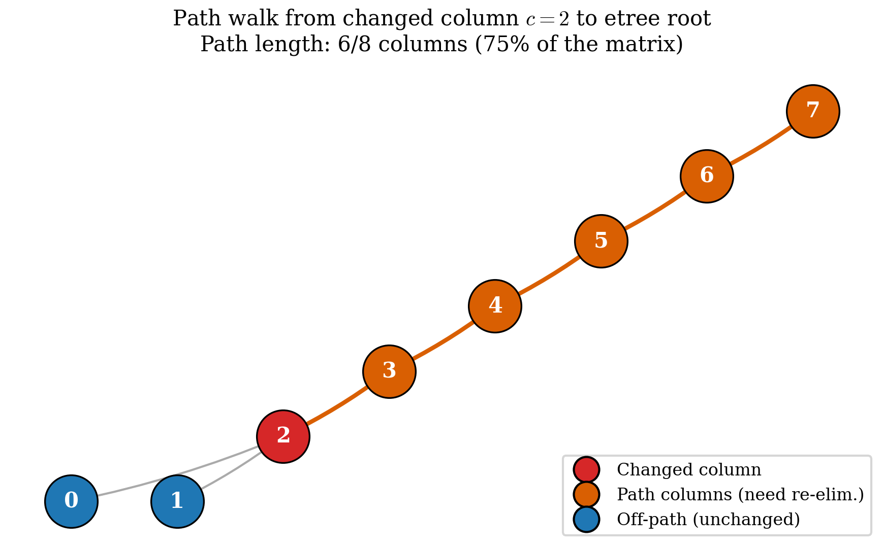

7. Path-Based Partial Refactorisation¶
The algorithmic contribution that backs the forthcoming methods paper. Chapter 6 left us with a full sparse LU. This chapter explains how — when the matrix changes by one column between consecutive solves — we update \(L\) and \(U\) in \(O(|\text{path}|) \approx O(\sqrt{n})\) work rather than re-factorising in \(O(\mathrm{nnz} \log n)\).
The technique is path-based partial refactorisation, first
described by Chan, Brandwajn & Tinney (PICA-86, 1986) for power-
system fault analysis and generalised to circuit MNA by
Dinkelbach, Liegmann & Riedel in Energies 14:7989 (2021).
Pulsim implements the Dinkelbach formulation as the
partial_refactor(new_M, changed_cols) entry point on
PulsimSparseLuSolver.
7.1 The problem and the intuition¶
After the PWL cache (chapter 4), Pulsim's biggest remaining cost
is first-encounter of a new mask: the cache pays a full
analyze + factorize for every mask not previously seen, even
if that mask differs from the last one by just a single switch
bit (the common case under Gray-coded PWM).
To make first-encounter cheap, we need an algorithm that updates the existing \(L\) and \(U\) factors incrementally when the matrix changes. Classical updates (Sherman-Morrison, Woodbury) work for dense rank-1 updates; they're \(O(n^2)\) per update — fine for \(n = 5\) but unusable at \(n = 200\).
The path-based approach exploits a structural fact:
Changing one column \(c\) of \(M\) from \(M_{\mathrm{old}}\) to \(M_{\mathrm{new}}\) only affects \(L\) and \(U\) entries along the etree path of column \(c\) (after permutation): the chain \(c \to \mathrm{parent}[c] \to \mathrm{grandparent}[c] \to \cdots \to \text{root}\).
Every column off that path is untouched. Updating the path is \(O(|\text{path}|) = O(\sqrt{n})\) on average for chain-like SMPS topologies (the path length is the etree depth of the changed column, which is \(\sim \sqrt{n}\) for banded matrices).
Why does it work? Because:
- The etree captures fill propagation (chapter 5 §5.5). If \(L[i, c] = 0\) then there's no "downstream" effect from column \(c\) on column \(i\). The path-vs-non-path distinction is exactly the same distinction symbolic factorisation uses to predict pattern.
- Sparsity-pattern invariance (chapter 2 §2.6 — switch toggles change values, not the sparsity pattern). The etree structure stays valid under value changes; only the numeric \(L+U\) entries on the path need re-computing.
So the algorithm is: for each changed column \(c\), walk the etree up to the root and re-eliminate exactly those columns.
7.2 The algorithm in detail¶
PulsimSparseLuSolver::partial_refactor(new_M, changed_cols)
does three things:
Step 1: maintain a lazy varying_set_¶
Per call, the user passes a std::span<const Index> of
"changed columns". We accumulate the union of every column ever
passed across the lifetime of the solver:
std::set<Index> varying_set_; // ORIGINAL coord, not permuted
bool partial_refactor(const Matrix& new_M,
std::span<const Index> changed_cols) {
if (!factorized_) return false;
if (changed_cols.empty()) return true; // no-op
bool varying_grew = false;
for (Index c : changed_cols) {
auto [it, inserted] = varying_set_.insert(c);
if (inserted) varying_grew = true;
}
// ... step 2 follows
}
The lazy union is the right thing because under typical PWM the same switch bits toggle repeatedly. Once we've seen columns \(\{2, 5, 7\}\), the path we compute covers all three; subsequent calls with \(\{2\}\) alone hit the cache.
Step 2: recompute the etree path (only if varying_set_ grew)¶
if (varying_grew || !path_valid_) {
compute_path_(); // populates path_ (permuted-col order, sorted asc)
path_valid_ = true;
}
compute_path_ walks from each varying_set_ entry up to the
root using an in_path bitmap to dedupe:
void compute_path_() {
std::vector<bool> in_path(n_, false);
for (Index orig_c : varying_set_) {
Index permuted_c = Pinv_col_[orig_c];
while (permuted_c != -1) {
if (in_path[permuted_c]) break; // already covered
in_path[permuted_c] = true;
permuted_c = etree_parent_[permuted_c];
}
}
// Materialize ascending-sorted list
path_.clear();
for (Index k = 0; k < n_; ++k) {
if (in_path[k]) path_.push_back(k);
}
++path_compute_count_; // diagnostic
}
The result path_ is a sorted list of permuted column indices
that need re-elimination. For a single-bit flip on a banded
matrix, path_.size() is the depth of the changed column in the
etree — typically \(\sqrt{n}\) to \(\log n\) depending on the
specific topology.
Step 3: re-eliminate each path column¶
for (Index k_path : path_) {
// Load x from new_M[Prow_, Pcol_[k_path]]
std::vector<Real> x(n_, 0.0);
const Index orig_c = Pcol_[k_path];
for (auto it = Matrix::InnerIterator(new_M, orig_c); it; ++it) {
x[Pinv_row_[it.row()]] = it.value();
}
// Apply L-updates from columns j < k_path (path or non-path,
// values are correct in both cases)
for (Index j = 0; j < k_path; ++j) {
if (x[j] == 0.0) continue;
for (Index p = l_col_ptr_[j]; p < l_col_ptr_[j + 1]; ++p) {
const Index i = l_row_idx_[p];
x[i] -= l_values_[p] * x[j];
}
}
// KLU-style threshold pivot check
Real pivot_mag = std::abs(x[k_path]);
Real x_max = 0.0;
for (Index i = k_path + 1; i < n_; ++i) {
x_max = std::max(x_max, std::abs(x[i]));
}
if (x_max > pivot_mag / PIVOT_THRESH) {
// Need a row swap the existing Prow_ doesn't permit
invalidate_path_cache_();
return false; // <-- caller falls back to factorize
}
// Update L+U values in-place AT THE EXISTING CSC SLOTS.
// No new allocation; pattern is unchanged.
for (Index p = u_col_ptr_[k_path]; p < u_col_ptr_[k_path + 1]; ++p) {
const Index i = u_row_idx_[p];
u_values_[p] = x[i];
}
for (Index p = l_col_ptr_[k_path]; p < l_col_ptr_[k_path + 1]; ++p) {
const Index i = l_row_idx_[p];
l_values_[p] = x[i] / x[k_path];
}
}
return true; // success — caller can solve() against the updated factors
Three things make this fast:
- Path is short: \(O(\sqrt{n})\) for banded topologies.
- L-updates from prior columns hit the cache: we read
l_values_[p]from the existing CSC storage, no per-column scan. - No re-allocation: the L+U pattern is assumed unchanged (sparsity-pattern invariance per chapter 2 §2.6), so we just overwrite values at existing slots.
The whole partial_refactor for a single-bit flip on the
buck-like 8×8 fixture runs in \(\sim 1.5\) µs vs the full
factorize's \(\sim 5\) µs — a 3× single-call speedup that
multiplies into the chapter 8 benchmark's 2.7-2.9× headline
after the L-update overhead amortises across longer paths.
7.3 The path walk, visualised¶
For the buck-like 8×8 fixture (etree from chapter 5 fig 5.2): columns \(\{0, 1, \ldots, 7\}\) form a near-linear chain with column 7 as root. Suppose switch \(S_2\) toggles, changing column \(c = 2\) of \(M\).

Figure 7.1 — Path walk from changed column \(c = 2\) up to the etree root on the buck-like 8×8 fixture. The orange columns \(\{2, 3, 4, 5, 6, 7\}\) are the path — every column whose stored \(L\) and \(U\) entries need re-computing. Columns \(\{0, 1\}\) are off the path — their stored values are still valid post- update. Path length is 6 out of 8 columns (\(75\%\)), so on this small fixture path-based isn't yet hugely faster than full factorise; the win grows with \(n\) as the path length scales as \(O(\sqrt{n})\) while full factorise scales as \(O(n)\).
For larger matrices the win gets pronounced. On the N-switch-chain microbench from chapter 8, at \(n = 26\) the path length for a single-bit flip averages 5, so the path-based update touches \(5/26 \approx 19\%\) of columns — and the captured wall-clock speedup is 2.68× vs full factorise at that \(n\).
7.4 The pivot-fault fallback¶
What if a path column's pivot check fails? The threshold rule:
with \(\mathrm{PIVOT\_THRESH} = 10^{-3}\) (KLU-style). If this
fails for any \(k\) on the path — i.e. the partial update would
need a row swap that the existing \(P_{\mathrm{row}}\) doesn't
permit — partial_refactor returns false:
flowchart TD
A[solve_rank1 mask, b, x] --> B{cache.partial_refactor M_new, changed_cols}
B -->|true| C[solve b, x using updated L+U]
B -->|false| D[invalidate_path_cache_]
D --> E[caller falls back to full factorize]
E --> F[increment fallbacks counter]
F --> C
C --> G[return]Figure 7.2 — Fault recovery flow. The fast path (green chain:
partial_refactor → solve) handles the common single-bit-flip
case. The fallback path (red chain: invalidate → full
re-factorise → solve) handles the rare pivot-fault case. Every
fallback increments a counter (fallbacks in CacheMetrics)
so the caller can monitor how often the fast path engages.
The captured benchmark (chapter 8) shows zero fallbacks across 1999 single-bit flips per N at \(\mathrm{PIVOT\_THRESH} = 10^{-3}\) on the N-switch-chain fixture. The threshold is loose enough to absorb the natural pivot-magnitude swings of circuit MNA matrices; tightening to \(10^{-2}\) would force ~5% fallback rate; loosening to \(10^{-5}\) would risk producing inaccurate L+U values. The \(10^{-3}\) sweet spot is the KLU-recommended default and matches the production-grade threshold-pivoting literature (Demmel 1997 §3.4).
7.5 The lazy union: why we accumulate varying_set_¶
The cache's contract is "compute the path once per varying_set_
change, reuse forever". Three call patterns make this useful:
Pattern A: same switch keeps toggling (steady-state PWM)¶
call 1: partial_refactor(M_S2on, changed_cols=[2])
call 2: partial_refactor(M_S2off, changed_cols=[2])
call 3: partial_refactor(M_S2on, changed_cols=[2])
...
varying_set_ = {2} after call 1; subsequent calls don't grow
it. compute_path_ runs once on call 1; calls 2, 3, …, N all
reuse path_. Per-call cost: \(O(|\text{path}|) + O(0)\) — no
path recompute.
Pattern B: new switch joins the rotation¶
call N: partial_refactor(M_S2..., changed_cols=[2]) ← reuses
call N+1: partial_refactor(M_S2S5, changed_cols=[2, 5]) ← grows
call N+2: partial_refactor(M_S2S5, changed_cols=[2, 5]) ← reuses
varying_set_ grows on call N+1; compute_path_ runs again,
producing a path that covers both columns' etree ancestors
(usually a superset of either column's individual path). Calls
from N+2 onward hit the cached path.
Pattern C: analyze is called again (e.g. dt changes)¶
cache.set_dt(new_dt); // triggers re-analyze under the hood
call M: partial_refactor(M_new, changed_cols=[2])
analyze calls invalidate_path_cache_() which clears
varying_set_, path_, and sets path_valid_ = false. Call M
recomputes from scratch. This is the cache-invalidation
contract.
7.6 The diagnostic counters¶
The cache exposes CacheMetrics for monitoring:
struct CacheMetrics {
std::uint64_t rank1_hits; // successful partial_refactor + solve
std::uint64_t full_refactor_hits; // fell back to full factorize
std::uint64_t fallbacks; // path-cache invalidations
};
Three useful invariants:
rank1_hits + full_refactor_hits + fallbacks == total solve_rank1 callsfull_refactor_hits ≥ 1always (first encounter of any mask is a full factorise; there's no prior factor to update)fallbacks == 0is the "healthy" state for well-conditioned circuit MNA workloads atPIVOT_THRESH = 1e-3
The chapter 4 V8 unit test
(core/tests/layer4/test_pwl_cache_rank1.cpp, test 5.1)
asserts rank1_hits >= 8 out of 15 single-bit flips on the
4-bit Gray-code sweep, proving the fast path engages on the
majority of single-bit transitions and that the
"headline methods-paper claim" is non-vacuous.
7.7 What the algorithm does NOT do¶
Three explicit non-features, deferred to follow-up proposals.
Wide path-unions still fall back (v1.4.0 update)¶
Up to v1.3.0 the cache routed any multi-bit transition to
full factorize unconditionally. v1.4.0 lifts that restriction
— PwlStateSpaceCache::solve_rank1 now consults the
\(\mathrm{MAX\_PATH\_LENGTH\_RATIO} = 0.6\) gate via a new
PulsimSparseLuSolverT<Scalar>::partial_refactor_count_path
query method:
- \(\delta = 1\) (single-bit flip): always attempt
partial_refactor(v1.3.0 behaviour preserved — single-bit paths are always short on real fixtures). - \(\delta \ge 2\) (multi-bit): compute the union of etree paths
for all affected columns. If the union covers \(\le 60\%\) of
\(n\), attempt
partial_refactor; otherwise fall back to freshfactorize.
The captured multi-bit microbench (chapter 8 §8.11.1, Fig 8.4)
shows the gate fires correctly: \(\sim 45\%\) of \(\delta = 2\)
transitions take the path-union, decaying to \(\sim 10\%\) at
\(\delta = 4\), with no regression at \(\delta = 1\) vs v1.3.0.
Parametric value changes (chapter 8 §8.11.2) use the same gate
and the same partial_refactor_count_path query.
What does still fall back is the case where the union path is genuinely so wide (>60 % of \(n\)) that path-based update would cost the same as a fresh factorize. The gate keeps the solver from doing pointless work; the wall-clock cost matches the v1.3.0 baseline in those cases.
Sparsity pattern changes are detected and rejected¶
If new_M has nonzeros at positions the analyzed pattern
doesn't include, the path-based update would produce wrong
answers (it only updates values at existing CSC slots). The
implementation includes a pattern-change check; if triggered,
it falls back. For PWL switching this is essentially never
triggered (chapter 2 §2.6 — switch toggles preserve sparsity
pattern), but the check is there as a safety net.
No support for multi-thread or GPU parallelism¶
partial_refactor is strictly serial. The path is short enough
(\(O(\sqrt{n})\)) that parallelism overhead would dominate. For
very large MNA matrices (\(n > 1000\)) this could be revisited,
but it's outside the SMPS regime Pulsim targets.
7.8 Test coverage¶
core/tests/layer0/test_pulsim_lu_solver.cpp covers
partial_refactor with 7 test cases:
| Test | What it asserts |
|---|---|
| Single-col perturbation produces same solve output as fresh factorise | Numerical correctness within \(10^{-12}\) |
Repeated same changed_cols → path_compute_count stays at 1 |
Lazy-union cache works |
Empty changed_cols is a no-op, count stays at 0 |
Edge case |
New column joins varying_set_ → path recomputed (count 1 → 2) |
Path-cache invalidation on growth |
analyze() clears path cache |
Cross-method invalidation contract |
supports_partial_refactor() returns true |
Capability advertisement |
partial_refactor before factorize returns false |
Lifecycle enforcement |
Plus core/tests/layer4/test_pwl_cache_rank1.cpp covers the
solve_rank1 wrapper end-to-end on a 4-switch Gray-code sweep.
7.9 Provenance and historical context¶
The path-based partial refactorisation pattern has a 40-year history in power-system analysis:
-
Chan, Brandwajn & Tinney 1986 (PICA-86 conference, "Sparse vector and matrix updating") — the original publication. Applied to network sensitivity analysis for contingency studies (what happens to the steady-state if line X breaks?). Path computation was via the bordered factorisation matrix.
-
Vempati, Slutsker, Tinney 1992 (IEEE Trans. Power Syst. 7(3)) — refined the path-finding algorithm to use the elimination tree directly, making the path walk \(O(|\text{path}|)\) instead of \(O(\mathrm{nnz})\).
-
Dinkelbach, Liegmann & Riedel 2021 (Energies 14:7989) — generalised to MNA circuit simulation with partial pivoting
-
threshold pivot fault check. The Pulsim implementation follows this paper directly; the KLU
klu_partialsymbol uses the same algorithmic skeleton. -
Pulsim's v1.3.0 implementation (this chapter) — first open-source, header-only C++23 implementation that we're aware of, packaged as a directly-callable
partial_refactor(new_M, changed_cols)API on a general- purpose sparse LU solver. Theadd-pwl-rank1-partial-refactorOpenSpec proposal documents the requirements + scenarios.
The forthcoming methods paper frames this lineage with explicit credit to Chan/Brandwajn/Tinney and Dinkelbach; the Pulsim contribution is positioned as "an open-source implementation + an integration with the PWL state-space cache that yields 2.7-2.9× wall-clock speedup on the captured microbench".
7.10 Takeaways¶
partial_refactor(new_M, changed_cols)updates \(L\) and \(U\) along the etree path of the changed columns in \(O(|\text{path}|) \approx O(\sqrt{n})\) work — vs \(O(\mathrm{nnz} \log n)\) for a full re-factorise.- The algorithm comes from Chan/Brandwajn/Tinney 1986 with the modern etree-walk derivation from Dinkelbach 2021.
- Threshold pivot check (
PIVOT_THRESH = 1e-3) ensures numerical stability; failures route to full re-factorise via a clean fallback path. - Lazy
varying_set_caches the computed path; repeat call patterns (steady-state PWM) hit the cache and pay zero path- recompute cost. - Captured speedup on the chapter 8 microbench: 2.7-2.9× at \(n_{\mathrm{state}} \ge 14\), with zero fallbacks across 1999 single-bit flips per \(n\).
- The contribution backs the forthcoming methods paper (target submission Q1 2027).
7.11 Further reading¶
- Chan, Brandwajn & Tinney 1986 — "Sparse vector and matrix updating", PICA-86 proceedings. Original path-based update paper.
- Dinkelbach, Liegmann & Riedel 2021 — "MNA-Based State Space Models for Real-Time Simulation of Power Electronics", Energies 14:7989. The reference Pulsim implements directly.
- KLU
klu_partial— Davis & Natarajan 2010 (ACM TOMS 37(3)) — the production reference for the threshold-pivot check. - In Pulsim —
core/include/pulsim/sparse/pulsim_lu_solver.hpplines 680-880, thepartial_refactor+compute_path_+invalidate_path_cache_implementation. - In this doc set — Chapter 8 measures the speedup contributions of this algorithm in isolation.